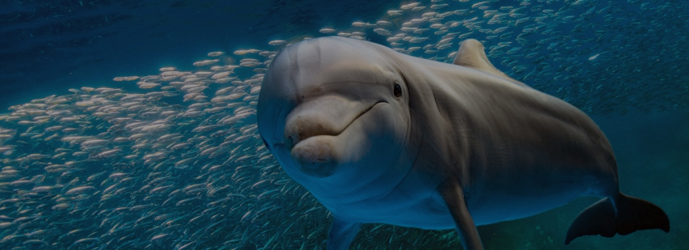

ORIGINE: ANIMALE
DELFINO
Il delfino è un mammifero acquatico che vive nelle acque calde e tropicali dell’ Oceano Atlantico, Mar Rosso e Mar nero.
INQUINAMENTO ACQUIFERO
PERCHÈ È IN VIA DI ESTINZIONE?
Il delfino è un animale diffuso in tutto il mondo, ma in alcune parti di esso viene catturato e quindi gli esemplari sono sempre meno visibili. Non solo la cattura scaturisce ciò, infatti anche l'inquinamento dell'acqua sta portando ad una minore riproduzione di questo bellissimo esemplare.
- Dimensioni: è di grandi dimensioni, raggiunge i 100 kg di peso e 2 metri di lunghezza.
- Vita media: 20/25 anni.
- Colore: manto scuro e il petto chiaro/ bianco.
- Alimentazione: ricca di pesci di piccole dimensioni.
- Stile di vita: per cacciare si muovono in gruppo. Proprio per questo sappiamo che il delfino non è un animale solitario.
- Curiosità: è un animale molto veloce ed è conosciuto per la sua grande intelligenza e furbizia.